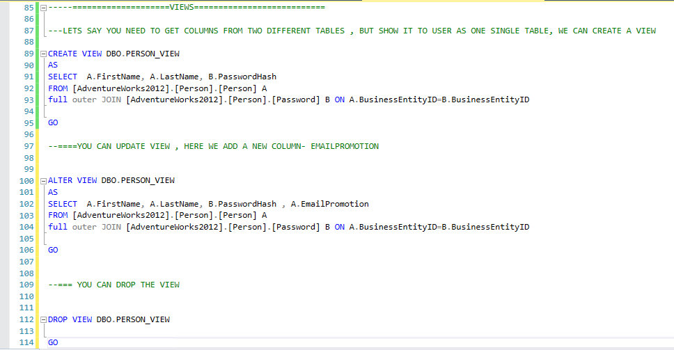

SQL Views
Views in SQL are kind of virtual tables. A view also has rows and columns as they are in a real table in the database. We can create a view by selecting fields from one or more tables present in the database. A View can either have all the rows of a table or specific rows based on certain condition. In this article we will learn about creating , deleting and updating Views.
We can do the following for views.
1.Create Views
2.Update/ Alter views
2.Drop views
Below is a screenshot from SSMS on how to create, update or drop views.
Advantages of using a View
Security
Each user can be given permission to access the database only through a small set of views that contain the specific data the user is authorized to see, thus restricting the user's access to stored data
Query Simplicity
A view can draw data from several different tables and present it as a single table, turning multi-table queries into single-table queries against the view.
Structural simplicity
Views can give a user a "personalized" view of the database structure, presenting the database as a set of virtual tables that make sense for that user.
Consistency
A view can present a consistent, unchanged image of the structure of the database, even if the underlying source tables are split, restructured, or renamed.
Data Integrity
If data is accessed and entered through a view, the DBMS can automatically check the data to ensure that it meets the specified integrity constraints.
Logical data independence.
View can make the application and database tables to a certain extent independent. If there is no view, the application must be based on a table. With the view, the program can be established in view of above, to view the program with a database table to be separated.
Disadvantages of views
Performance
Views create the appearance of a table, but the DBMS must still translate queries against the view into queries against the underlying source tables. If the view is defined by a complex, multi-table query then simple queries on the views may take considerable time.
Update restrictions
When a user tries to update rows of a view, the DBMS must translate the request into an update on rows of the underlying source tables. This is possible for simple views, but more complex views are often restricted to read-only.